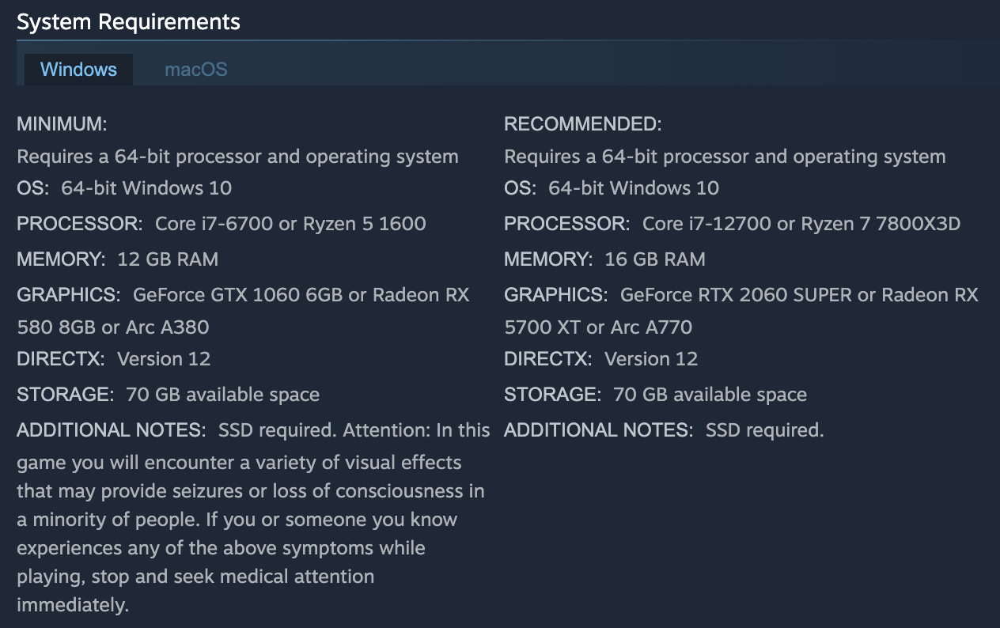

Il sito web calcola la potenza computazionale del tuo computer in maniera molto approssimata:
In poche parole, la CPU e la GPU selezionate hanno un valore che va da 1 (poco potente dal punto di vista computazionale) a 4 (molto potente).
Ogni gioco scelto ha un requisito minimo di CPU e GPU, se i valori selezionati di processore e scheda video sono maggiori o uguali ai requisiti minimi allora il videogioco si può giocare.
Non vengono considerati innumerevoli altri requisiti, come memoria, ram, sistema operativo, ... che renderebbero l'output più preciso ma con un codice inutilmente più lungo e ripetitivo.
Visto che il sito è a scopo didattico, mi sono permesso di omettere questa precisione.
